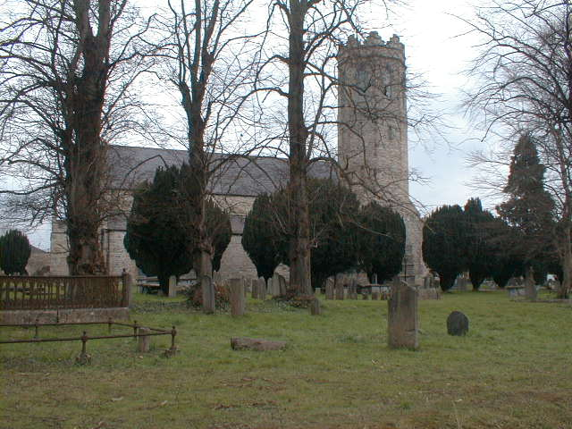
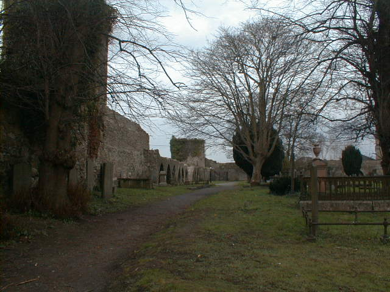

Old St Mary's Church
Old St Mary's Church

It is unknown when this church was original built. but is thought that William de Burgo built it in 1204 before 1228 which was
the first referance to it (which was the first referance to any building in Clonmel) dated back to a letter in 1228 in the late 14th century.
The town was almost continously beseiged by the Irish leading James Earl of Ormand to exclaim.Otho De Grandison from the town of Grandison or
Grandison or Graunzun in Switzerland was made sheriff of Clonmel in 1265 and granted property including the manor of Clonmel formaly owned by
William, Richard and Walter De Burgo. De Grandison's heirs sold the landship in 1338 to A Maurice Fitzgerald the Earl of Desmond.

© 2004 history Of Clonmel